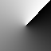
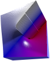
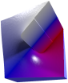

The Toad's Slimy Mudhole
where The Toad intercourses Python
Preamble
After closing AmphiSoft plugins project long ago in a universe far away The Toad of Great Mental Powers made a decision to implement some of spontaneous ideas, developed or implied, into something potentially easy to understand and hopefully simple to use by humans.
As an «easy to understand» mean of production Python was chosen (that was probably an unrecoverable mistake. Or may be not), as ideas regular ones like «what happens if we map image signal to something else» were used.
As a result, some Python projects described hereby were created and shared on GitHub.
All programs are completely free to download, use, and even modify in case you feel like improving them. Sharing your results is welcome; admiring, adoring and hailing The Toad of Great Mental Powers obligatory.
Amble, i.e., the projects:
POV‑Ray img2mesh

Python program img2mesh developed for converting images into 3D mesh, primarily in POV‑Ray format (although OBJ, STL and DXF are supported as well), so that bright pixels turns into high peaks on resulting 3D landscape - the brighter source image pixel, the higher 3D mesh node point is.
Source map |
Geometry №3 |
Geometry №3+ |
|---|---|---|
|  |  |  |
Exported POV‑Ray scene file contains everything necessary to be rendered right out of the box (camera, lights, texture), or may be edited later.
Update: In version 3.21.21.21 mesh geometry upgraded to version 3+, providing improved sharp diagonals rendering.
With subsequent update to version 3.22.3.7 output for new geometry №3+ was accelerated ca. 20% due to more reasonable buffering control. 🔽Read more...
POV‑Ray Mosaic


Currently project POV‑Ray Mosaic includes Python programs converting PNG or PPM image into POV‑Ray mosaic scene, consisting of various objects - spheres, cylinders, boxes, prisms, etc. - colored after source image pixels.
POV‑Ray Mosaic provide well structured output to simplify bulk object and attributes change.
Rendered images are suitable for scrapbooks, posters, and other creative ways to entertain and/or annoy people.
Update: In version 1.19.5.19 filter and transmit turned from constants to functions, enabling more interesting transparency tricks. 🔽Read more...
POV‑Ray Thread


«Linen» and «Stitch» are programs, which read pixels of source image and convert them into a complex 3D structure, simulating something textile and thread related, in POV‑Ray format.
Currently tabby/linen plain weave, and cross-stitching simulations are provided. Exported 3D structures are configurable regarding thread appearance and pattern distortions.
Update: in ver. 1.20.7.14 filter module substantially rewritten to support different color modes and process alpha. 🔽Read more...
Scale2x, Scale3x, Scale2xSFX and Scale3xSFX in pure Python
ScaleNx is a pure Python implementation of several pixel art image scaling algorithms, viz. Scale2x, Scale3x, Scale2xSFX and Scale3xSFX. Main program for both single file and batch folder processing with suitable GUI is available, free and open source.
Update: ScaleNx version 25.09.25.09 involves further GUI legibility improvements and minor main module speed-up. 🔽Read more...
PGM and PPM image files handling in pure Python

PyPNM is a pure Python implementation of read/write functions for Portable Gray Map (.pgm) and Portable Pixel Map (.ppm) image formats. Well, due to format specifications fluid nature it's hard to say that PyPNM is fully compliant, but it was tested side by side with different software, and found to understand even 16-bit per channel PGM and PPM produced by Adobe Photoshop (which uses somewhat, err, unique header).
Beside reading and writing PNM files, PyPNM provides a suitable facility for viewing image-like data by converting it on the fly to in-memory PNM bytes and serving it to Tkinter (see usage example on the right). For image data with transparency, PyPNM simulates a preview over chessboard pattern (like Photoshop and GIMP).
Update: Major update to version 2 for saving resources. 🔽Read more...
Python batch files
Some batch processing scripts made for my personal regular use. May appear to be useful to others. 🔽Read more...